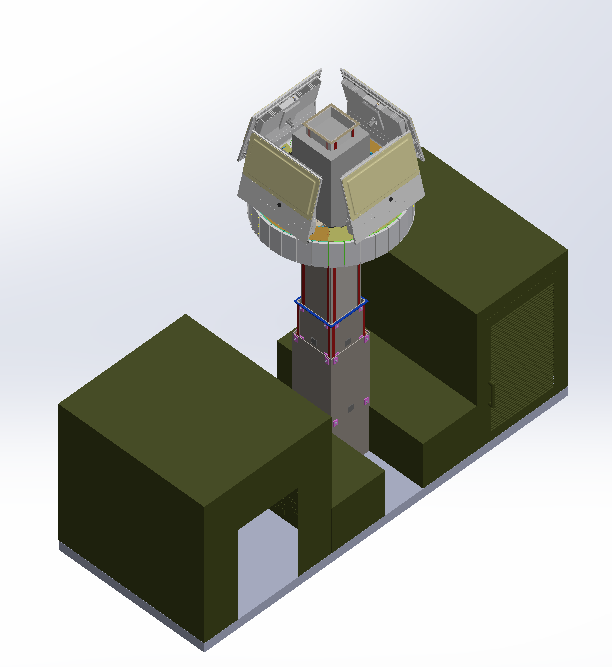

FLAGSHIP PROJECT / DEVELOPED FOR NASTP
DARK X Radar
Mechanical Design & Integration
A manufacturing-focused mechanical design project developed for NASTP, bringing together a radar lifting mechanism and two dedicated cabins. I designed the mechanism for raising and lowering the radar, its operating and control arrangement, and the generator and operator cabins as parts of an integrated CAD assembly.


Radar lifting mechanism & controls
My contribution covered the complete mechanical lifting arrangement used to move the radar between its lower and raised positions. I also developed the mechanism's operating and control arrangement as part of the overall design.
The two CAD views show the assembly in these different positions, presenting the lifting system within the wider mechanical layout.
Generator & operator cabins
I designed two separate cabins alongside the radar assembly: one for the generator and another for the operator responsible for operating the radar.
The cabin design and lifting assembly were brought together in a manufacturing-focused layout, combining mechanism design, supporting structures and equipment accommodation in one project.